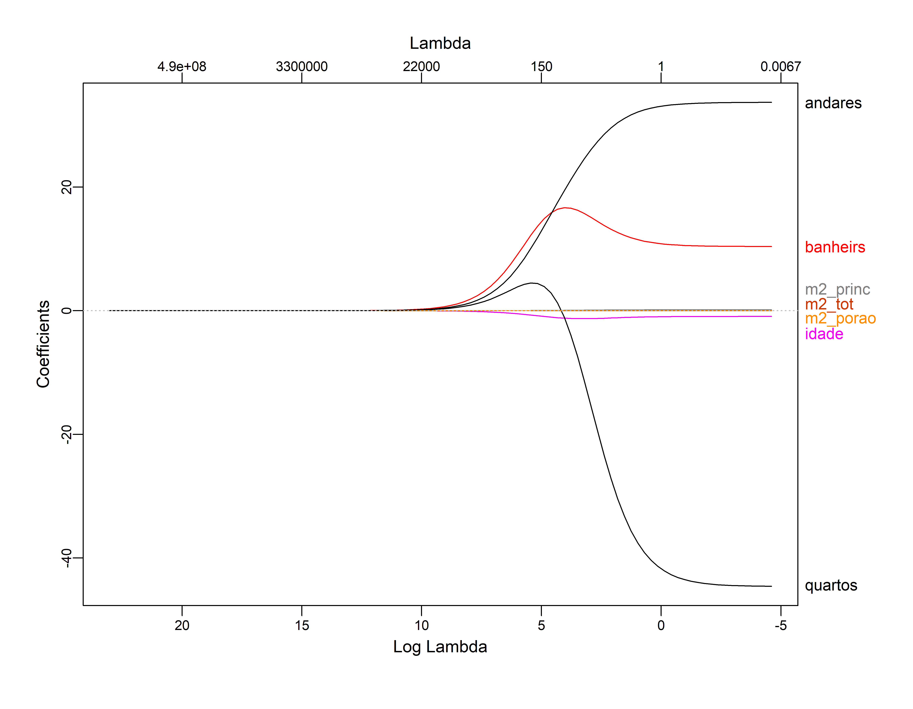
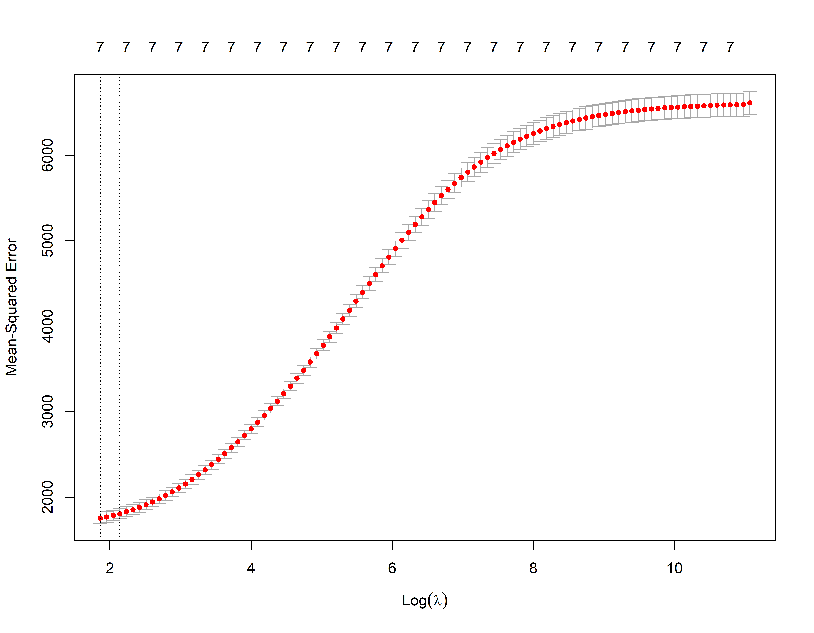
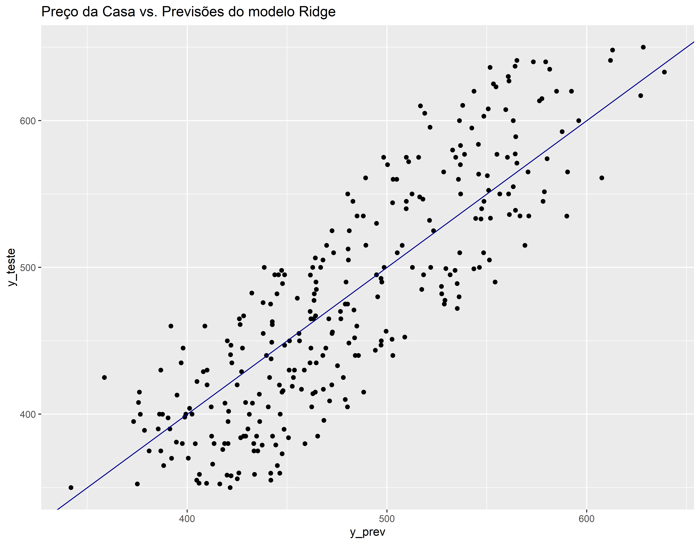
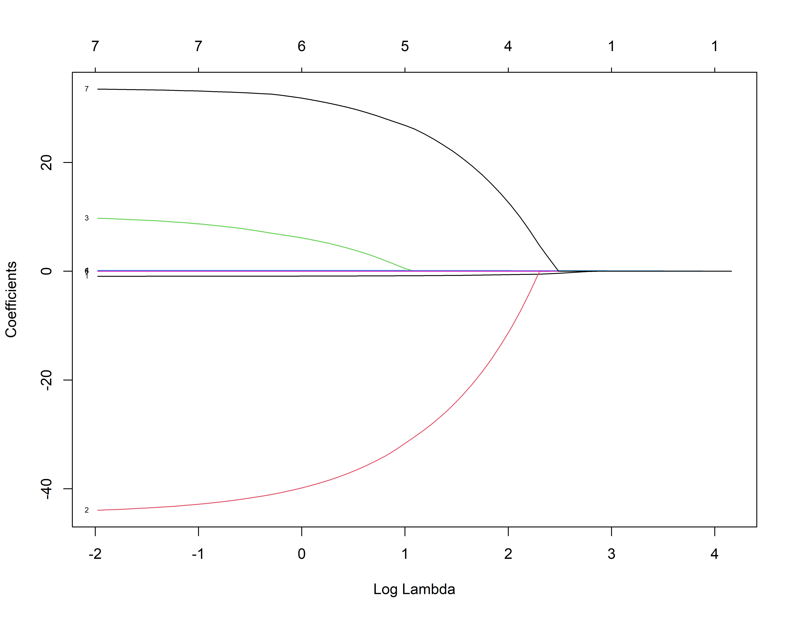
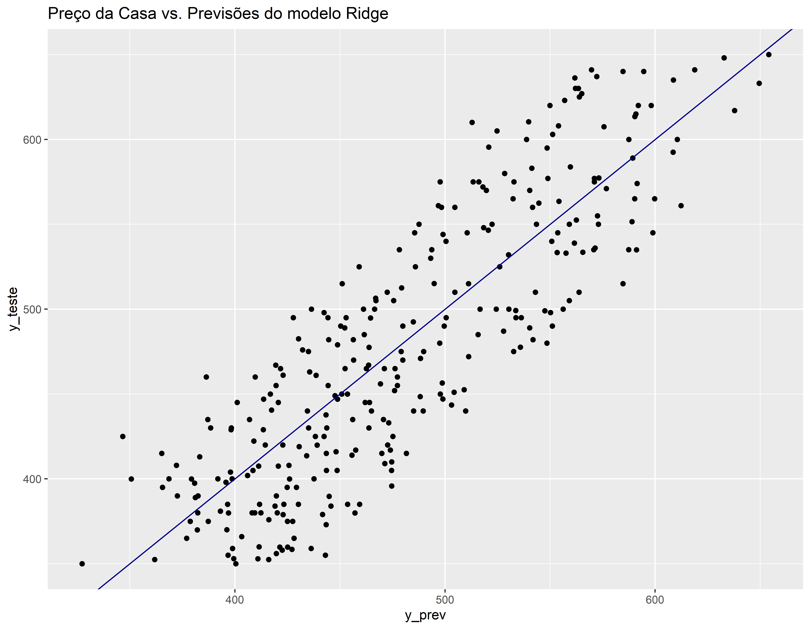

Regularização de Modelos
Regularização de modelos
Carregando Bibliotecas
Carregando os dados
Vendas de casas em Seattle entre 2015 e 2016
#> # A tibble: 6 × 8
#> selling_price home_age bedrooms bathrooms sqft_living sqft_lot sqft_basement
#> <dbl> <dbl> <dbl> <dbl> <dbl> <dbl> <dbl>
#> 1 487000 10 4 2.5 2540 5001 0
#> 2 465000 10 3 2.25 1530 1245 480
#> 3 411000 18 2 2 1130 1148 330
#> 4 635000 4 3 2.5 3350 4007 800
#> 5 380000 24 5 2.5 2130 8428 0
#> 6 495000 21 3 3.5 1650 1577 550
#> # ℹ 1 more variable: floors <dbl>vendas_casa <- vendas_casa %>% rename(preco=selling_price,
idade=home_age,
quartos=bedrooms,
banheiros= bathrooms,
m2_princ=sqft_living,
m2_tot=sqft_lot,
m2_porao=sqft_basement,
andares=floors
)
summary(vendas_casa)#> preco idade quartos banheiros
#> Min. :350000 Min. : 0.00 Min. :1.000 Min. :0.750
#> 1st Qu.:410000 1st Qu.:12.00 1st Qu.:3.000 1st Qu.:2.438
#> Median :470000 Median :19.00 Median :3.000 Median :2.500
#> Mean :479085 Mean :18.53 Mean :3.338 Mean :2.473
#> 3rd Qu.:541625 3rd Qu.:25.00 3rd Qu.:4.000 3rd Qu.:2.500
#> Max. :650000 Max. :49.00 Max. :8.000 Max. :5.000
#> m2_princ m2_tot m2_porao andares
#> Min. : 550 Min. : 600 Min. : 0.0 Min. :1.000
#> 1st Qu.:1640 1st Qu.: 3200 1st Qu.: 0.0 1st Qu.:2.000
#> Median :2060 Median : 5508 Median : 0.0 Median :2.000
#> Mean :2087 Mean : 11891 Mean : 129.7 Mean :1.865
#> 3rd Qu.:2500 3rd Qu.: 8644 3rd Qu.: 122.5 3rd Qu.:2.000
#> Max. :3880 Max. :415126 Max. :1660.0 Max. :2.000#> idade quartos banheiros m2_princ
#> Min. : 0.00 Min. :1.000 Min. :0.750 Min. : 550
#> 1st Qu.:12.00 1st Qu.:3.000 1st Qu.:2.438 1st Qu.:1640
#> Median :19.00 Median :3.000 Median :2.500 Median :2060
#> Mean :18.53 Mean :3.338 Mean :2.473 Mean :2087
#> 3rd Qu.:25.00 3rd Qu.:4.000 3rd Qu.:2.500 3rd Qu.:2500
#> Max. :49.00 Max. :8.000 Max. :5.000 Max. :3880
#> m2_tot m2_porao andares preco_m
#> Min. : 600 Min. : 0.0 Min. :1.000 Min. :350.0
#> 1st Qu.: 3200 1st Qu.: 0.0 1st Qu.:2.000 1st Qu.:410.0
#> Median : 5508 Median : 0.0 Median :2.000 Median :470.0
#> Mean : 11891 Mean : 129.7 Mean :1.865 Mean :479.1
#> 3rd Qu.: 8644 3rd Qu.: 122.5 3rd Qu.:2.000 3rd Qu.:541.6
#> Max. :415126 Max. :1660.0 Max. :2.000 Max. :650.0Conjunto de treino e de teste
#> Carregando pacotes exigidos: lattice#>
#> Anexando pacote: 'caret'#> O seguinte objeto é mascarado por 'package:purrr':
#>
#> lift#> [1] 1492y <- vendas_casa$preco_m
indice_teste <- createDataPartition(y, times = 1, p = 0.2, list = FALSE)
conj_treino <- vendas_casa[-indice_teste,]
conj_teste <- vendas_casa[indice_teste,]
str(conj_treino)#> tibble [1,192 × 8] (S3: tbl_df/tbl/data.frame)
#> $ idade : num [1:1192] 10 18 4 21 19 24 3 16 20 29 ...
#> $ quartos : num [1:1192] 3 2 3 3 3 2 4 3 3 3 ...
#> $ banheiros: num [1:1192] 2.25 2 2.5 3.5 2.25 1 2.5 2.75 2.75 2.5 ...
#> $ m2_princ : num [1:1192] 1530 1130 3350 1650 1430 1430 2140 2100 2930 1960 ...
#> $ m2_tot : num [1:1192] 1245 1148 4007 1577 4777 ...
#> $ m2_porao : num [1:1192] 480 330 800 550 0 420 0 590 1070 0 ...
#> $ andares : num [1:1192] 2 2 2 2 2 1 2 2 1 2 ...
#> $ preco_m : num [1:1192] 465 411 635 495 355 ...str(conj_teste)#> tibble [300 × 8] (S3: tbl_df/tbl/data.frame)
#> $ idade : num [1:300] 10 24 19 11 3 28 9 17 9 19 ...
#> $ quartos : num [1:300] 4 5 3 4 4 5 3 3 3 3 ...
#> $ banheiros: num [1:300] 2.5 2.5 2 2.5 2.75 3 2.5 3.5 3.5 2.25 ...
#> $ m2_princ : num [1:300] 2540 2130 2190 1920 2360 ...
#> $ m2_tot : num [1:300] 5001 8428 19800 9000 15100 ...
#> $ m2_porao : num [1:300] 0 0 0 0 0 0 0 770 770 145 ...
#> $ andares : num [1:300] 2 2 1 2 1 2 2 2 2 2 ...
#> $ preco_m : num [1:300] 487 380 465 425 535 ...| idade | quartos | banheiros | m2_princ | m2_tot | m2_porao | andares | preco_m |
|---|---|---|---|---|---|---|---|
| 10 | 3 | 2.25 | 1530 | 1245 | 480 | 2 | 465.000 |
| 18 | 2 | 2.00 | 1130 | 1148 | 330 | 2 | 411.000 |
| 4 | 3 | 2.50 | 3350 | 4007 | 800 | 2 | 635.000 |
| 21 | 3 | 3.50 | 1650 | 1577 | 550 | 2 | 495.000 |
| 19 | 3 | 2.25 | 1430 | 4777 | 0 | 2 | 355.000 |
| 24 | 2 | 1.00 | 1430 | 365904 | 420 | 1 | 356.000 |
| 3 | 4 | 2.50 | 2140 | 7245 | 0 | 2 | 495.000 |
| 16 | 3 | 2.75 | 2100 | 10362 | 590 | 2 | 525.000 |
| 20 | 3 | 2.75 | 2930 | 5569 | 1070 | 1 | 559.900 |
| 29 | 3 | 2.50 | 1960 | 8469 | 0 | 2 | 552.321 |
Métodos de Regularização
O pacote glmnet não usa a linguagem de formula, em particular nós devemos passar \(x\) como uma matriz e \(y\) como um vetor, pois não se usa a sintaxe \(y \sim x\). Com isso será necessário ajustar x e y. A função model.matrix() é particularmente útil para criar x; não só produz uma matriz correspondente as variáveis explicativas, mas também transforma automaticamente quaisquer variáveis qualitativas em variáveis dummy. Esta última propriedade é importante porque o glmnet() só pode tomar insumos numéricos e quantitativos.
O pacote glmnet também por default padroniza as variáveis, o que é importante para a regressão Ridge e também para o LASSO. Ele posteriormente retorna os coeficientes para a escala inicial.
x_treino <- model.matrix(preco_m ~ . , data = conj_treino)[, -1]
y_treino <- conj_treino$preco_m
x_teste <- model.matrix(preco_m ~ . , data = conj_teste)[, -1]
y_teste = conj_teste$preco_mRegressão Ridge
Primeiro vamos ajustar um modelo de regressão Ridge. Isso é conseguido chamando glmnet() com alpha=0, se alpha=1 então glmnet() ajusta um lasso.(veja o arquivo de ajuda).
Por padrão, a função glmnet() executa a regressão ridge automaticamente selecionando a faixa de valores de \(\lambda\). No entanto, aqui nós escolhemos implementar usando uma grade de valores que variam de \(\lambda = 10^{-2}\) a \(\lambda = 10^{10}\), cobrindo toda a gama de cenários do modelo nulo contendo apenas o coeficiente linear até o ajuste dos mínimos quadrados.
Também podemos calcular o modelo para um valor particular de \(\lambda\) que não é um dos valores de grade. Observe que, por padrão, a função glmnet() padroniza as variáveis para que elas estejam na mesma escala. Esta padronização é muito importante no caso da regressão Ridge, pois ela é afetada pela mudança de escala das variáveis explicativas.
Associado a cada valor de \(\lambda\) existe um vetor de coeficientes de regressão de ridge, que é armazenado em uma matriz que pode ser acessada por ‘coef()’. Neste caso, é uma matriz \(13 \times 100\), com 13 linhas (uma para cada preditor, mais uma para o coeficiente linear) e 100 colunas (uma para cada valor de \(\lambda\)).

Quando \(\lambda\) é grande o esperado é que os coeficentes sejam pequenos e quando \(\lambda\) é pequeno os coeficientes assumem valores maiores.
ajusreg.ridge$lambda[1] # Mostra primeiro valor de lambda#> [1] 1e+10coef(ajusreg.ridge)[,1] # Mostra os coeficientes associados com o primeiro valor#> (Intercept) idade quartos banheiros m2_princ
#> 4.793155e+02 -2.734498e-08 2.861996e-07 5.797974e-07 9.012053e-10
#> m2_tot m2_porao andares
#> 3.183259e-12 -3.419035e-11 3.936601e-07ajusreg.ridge$lambda[100] # Mostra centésimo valor de lambda#> [1] 0.01coef(ajusreg.ridge)[,100] # Mostra os coeficientes associados com o centésimo valor#> (Intercept) idade quartos banheiros m2_princ
#> 2.558886e+02 -9.299049e-01 -4.458647e+01 1.038811e+01 1.439939e-01
#> m2_tot m2_porao andares
#> 9.087628e-05 -3.568248e-03 3.371000e+01#> Carregando pacotes exigidos: Formula#> Carregando pacotes exigidos: plotrixplot_glmnet(ajusreg.ridge)
Cross-Validation no Ridge
Nós podemos usar o k-fold cross validation para identificar o melhor valor de \(\lambda\)
A biblioteca glmnet já tem internamente uma função para uso do crosss validation. O default são 10 envelopes de dados nfold=10.

m_lamb <- ridge_cv$lambda.min # Seleciona o lambda que minimiza o MSE (EQM) de treino
m_lamb#> [1] 6.425292log(m_lamb)#> [1] 1.860242coef(ridge_cv, s=m_lamb)#> 8 x 1 sparse Matrix of class "dgCMatrix"
#> s1
#> (Intercept) 2.642227e+02
#> idade -1.136747e+00
#> quartos -2.993272e+01
#> banheiros 1.272875e+01
#> m2_princ 1.185102e-01
#> m2_tot 1.373143e-04
#> m2_porao -5.244311e-03
#> andares 3.030654e+01Avaliando com conjunto de teste
Em seguida avaliamos seu MSE no conjunto de teste, usando \(\lambda\) = m_lamb. Observe o uso da função ‘predict()’: desta vez temos previsões para um conjunto de teste, com o argumento newx.
Comparando real vs previsão no conjunto de teste
v_teste <- data.frame(y_teste, y_prev)
ggplot(v_teste, aes(x=y_prev, y=y_teste)) +geom_point() +
geom_abline(color = "darkblue") +
ggtitle("Preço da Casa vs. Previsões do modelo Ridge")
LASSO
Primeiro ajustamos com todos os dados como no caso do Ridge
ajusreg.lasso <- glmnet(x_treino,y_treino, alpha = 1)
plot(ajusreg.lasso, xvar="lambda", label=TRUE) # Representando os coeficientes
plot_glmnet(ajusreg.lasso)Validação Cruzada no LASSO
m_lamb1 <- lasso_cv$lambda.min # Seleciona o lambda que minimiza o MSE de treino
m_lamb1#> [1] 0.1384287log(m_lamb1)#> [1] -1.9774coef(lasso_cv, s=m_lamb1)#> 8 x 1 sparse Matrix of class "dgCMatrix"
#> s1
#> (Intercept) 2.567612e+02
#> idade -9.248281e-01
#> quartos -4.393777e+01
#> banheiros 9.756224e+00
#> m2_princ 1.434165e-01
#> m2_tot 8.570819e-05
#> m2_porao -2.919595e-03
#> andares 3.350271e+01Avaliando com conjunto de teste
Comparando real vs previsão no conjunto de teste
v_teste <- data.frame(y_teste, y_prev)
ggplot(v_teste, aes(x=y_prev, y=y_teste)) +geom_point() +
geom_abline(color = "darkblue") +
ggtitle("Preço da Casa vs. Previsões do modelo Ridge")